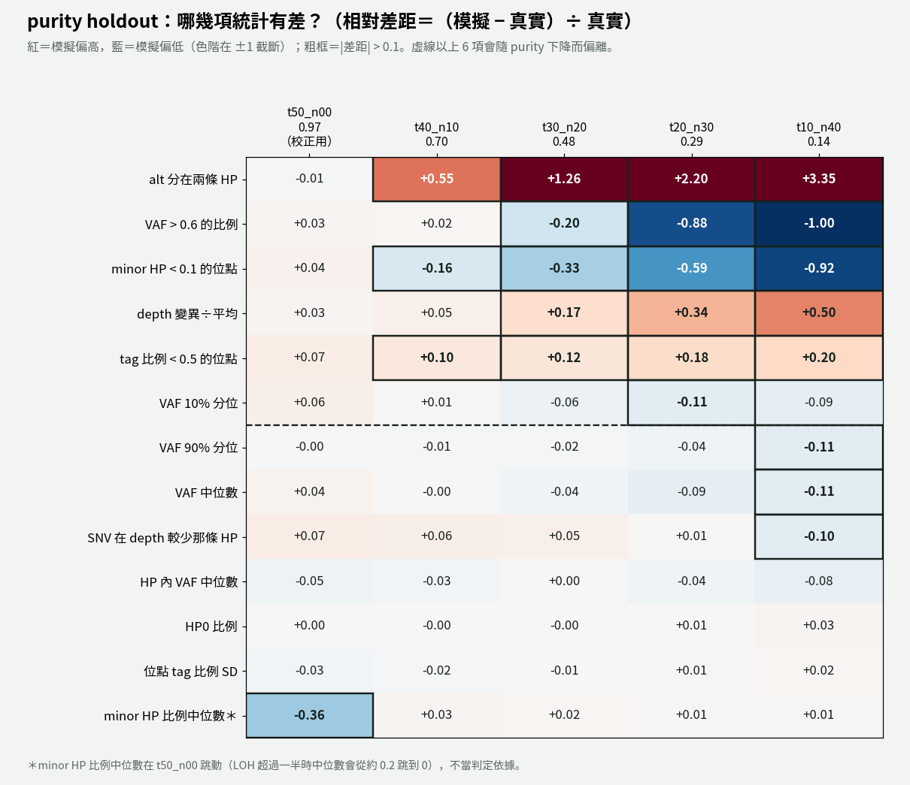
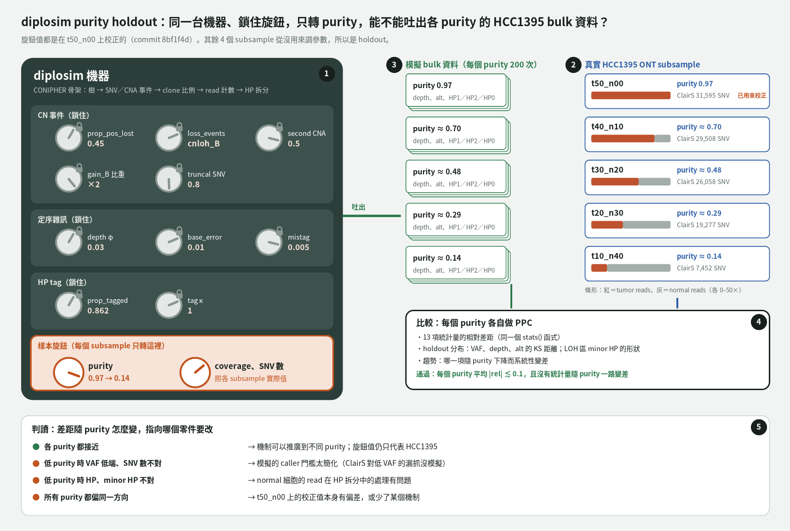
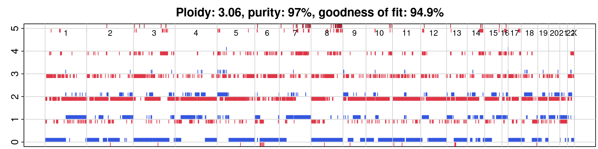

10-30 的 PPC 有一類差距跟 CN 有關：模擬的 LOH 太少，minor HP depth 也不對。ASCAT 顯示 HCC1395 約一半的 SNV 在 LOH 區，而且有 20.7% 是「LOH 之後又 gain」，例如 (3,0)。diplosim 照 CONIPHER，每個位置最多一個 CNA，做得出這些狀態嗎？
--prop-pos-lost 0.5、0.45，再加 clonal WGD，各跑 PPC。tools/cn_state_ascat_vs_diplosim.py，逐種 CN 狀態比較 ASCAT 和 diplosim。prop_pos_second_cna，預設 0 = CONIPHER）。再搭配 --loss-events cnloh_B。tools/ppc_distance_score.py）。gain_B 的比重加倍（--gain-events gain_A,gain_B,gain_B,gain_both）。gain_B 加倍後，HP 內 VAF 中位數的相對差距從 −0.20 改善到 −0.10；代價是 depth 變異÷平均變成 −0.17（下一項處理）。| 狀態／摘要 | ASCAT | diplosim 0.45 | cnloh_B＋second 0.5 |
|---|---|---|---|
| (2,0) | 0.272 | 0.233 | 0.353 |
| (3,0) | 0.123 | 0 | 0.124 |
| (4,0) | 0.050 | 0 | 0.042 |
| (1,0) | 0.023 | 0.243 | 0 |
| LOH（minor = 0） | 0.502 | 0.475 | 0.535 |
| total ≥ 5 | 0.157 | 0 | 0.106 |
| 平均 total CN | 3.25 | 2.38 | 3.04 |
| multiplicity ≥ 2 | 0.439 | 0.177 | 0.276 |
CONIPHER「每位置一個 CNA」的規則，做不出 near-triploid 腫瘤常見的「先 LOH、再 gain」。這是 diplosim 第一個離開 CONIPHER 的事件機制，而且只改成「事件的發生機率」，不讀外部 CN 表（見翻案項）。另一個教訓：CN 結構像，不代表 read 計數的統計量像，所以驗證要兩層都看。
(2,0) 仍多 8 個百分點，(5,1) 太少。truncal 0.8、gain_B 加倍、second 0.5 都是只看 HCC1395 t50_n00 選的值，只能當實驗設定。ASCAT 的 ploidy 3.06 可能偏高，CN 比較的基準本身有不確定性。WGD 前後順序改成機率參數（方案 ②）沒有做。
best t50_n00 設定：--prop-pos-lost 0.45 --loss-events cnloh_B --prop-pos-second-cna 0.5 --gain-events gain_A,gain_B,gain_B,gain_both --prop-truncal-snvs 0.8（其餘見下一項） CONIPHER 程式位置：evolution.py:308-320（每位置一個 CNA）、evolution.py:99-103（同 node 事件洗牌） 試過撤回：prop_snv_before_cna（HP 內 VAF 對上，但整體 VAF 太高）
diplosim/src/evolution.rsdiplosim/src/params.rsdiplosim/tests/behaviour.rsdiplosim/DECISIONS.mdtools/cn_state_ascat_vs_diplosim.pytools/ppc_distance_score.pytools/diplosim_ppc_hcc1395.pypython3 -I tools/cn_state_ascat_vs_diplosim.py <tmp> --prop-pos-lost 0.45 --loss-events cnloh_B --prop-pos-second-cna 0.5python3 -I tools/ppc_distance_score.py <name>=<lab_report dir> ...lab_report/2026-10-31_cn_state_ascat_vs_diplosim/lab_report/2026-10-31_ppc_distance_score/lab_report/2026-10-31_diplosim_ppc_hcc1395_{lost05,lost045,wgd_lost045,second05,cnloh_second05,truncal09,mult_t0.6,mult_t0.7,mult_t0.8,early_b0.6,early_b0.7,early_b0.8,gainB2,gainB3}/commit db6eaa8、455af8c、43afe62CN 改好之後，PPC 還有一群差距和 CN 無關：HP0 比例、各位點 tag 比例的差異、alt 分在兩條 HP、VAF 到不了 1、depth 變異偏小。diplosim 每條 read 用同一個機率決定 tag，而且沒有任何錯誤。要補哪些機制？
mistag_rate）和鹼基錯誤（base_error）。先試 0.01，再降到 0.005；同時把 PPC 的 purity 設成 ASCAT 的 0.97。tag_concentration κ）。tools/split_alt_by_alt_count.py），再把 base_error 提高到 0.01。depth_dispersion φ，depth 改成負二項。到這一步，t50_n00 上 13 項統計都在 ±0.1 左右，加上 HP 內 VAF ≥ 0.85 的位點比例（0.476 vs 0.520）也接近。但 9 個旋鈕都是看同一份資料調的，好幾個旋鈕幾乎一對一對應某個統計量，所以「低」不等於「機制對」。這就是下一項 purity holdout 要回答的問題。
mistag 0.005、base_error 0.01、tag 0.862／κ 1、φ 0.03 都只看 t50_n00 選；下一項已證實 base_error 與 φ 換 purity 就失準。LOH 區雜訊的形狀不對：真實比較兩極，模擬比較平均。同一條 read 上的共現沒有做（見翻案項）。
完整 t50_n00 設定：--prop-pos-lost 0.45 --loss-events cnloh_B --prop-pos-second-cna 0.5 --gain-events gain_A,gain_B,gain_B,gain_both --prop-truncal-snvs 0.8 --depth-dispersion 0.03 --base-error 0.01 --mistag-rate 0.005 --prop-tagged 0.862 --tag-concentration 1，purity 0.97、coverage 53 0.497 = 預設設定的 13 項 mean|rel|（ppc_distance_score.py 輸出） 新參數的預設值都等於改動前行為，預設輸出逐位元相同
diplosim/src/hp.rsdiplosim/src/sequencing.rsdiplosim/src/params.rsdiplosim/src/output.rsdiplosim/src/lib.rsdiplosim/tests/behaviour.rsdiplosim/DECISIONS.mdtools/draw_diplosim_tag_rate_options.pytools/split_alt_by_alt_count.pytools/plot_depth_vmr_explainer.pycargo test --release # 19 passedlab_report/2026-10-31_diplosim_ppc_hcc1395_{err001,err0005,err0005_pur097,pur097_noerr,pur097_mistag0005,pur097_base0005,tagbeta,base001,depthdisp0.01,depthdisp0.02,depthdisp0.03}/diplosim/docs/figs/tag_rate_option_1.pngcommit db6eaa8、445010a、7182fe4、8bf1f4d使用者提醒：這是模擬，不必很精確，而且只用了一個樣本和一份 ASCAT。那 diplosim 到底算不算模擬得好？t50_n00 的 0.061 是不是只是湊出來的？
| 比較流程 | t50 (0.97) | t40 (0.70) | t30 (0.48) | t20 (0.29) | t10 (0.14) |
|---|---|---|---|---|---|
| v1：alt ≥ 3、VAF ≥ 0.08，照真實 call 數模擬 | 0.061 | 0.099 | 0.206 | 0.396 | 0.562 |
| v2：alt ≥ 5、VAF ≥ 0.10，模擬 31,595 | 0.061 | 0.079 | 0.175 | 0.348 | 0.501 |


tag 相關的機制換 purity 仍成立，不是湊的。base_error 0.01 和 φ 0.03 則是在 t50_n00 上湊出來的：真實「alt 分在兩條 HP」幾乎不隨 purity 變，但 base_error 的效果會隨 purity 放大。下一步要找不隨 purity 放大的機制，而不是再調數字。
v2 還沒 commit。低 purity 的門檻仍偏鬆：t10 模擬約 12,000 個 vs 真實 7,260 個，需要機率式門檻。truncal 0.8 可能有一部分在補償舊的寬鬆門檻，還沒重查。下一步（修 base_error、修 φ、機率式門檻、評分加下限）等使用者選。樹和 subclone 結構完全沒驗證，HCC1395 沒有真值樹。
purity 換算：p = 2f/(ψ(1−f)+2f) × 0.97，ψ = 3.06 真實 ClairS call 數：t50 31,595、t40 29,508、t30 26,058、t20 19,277、t10 7,452 使用者訂的容許：差距 < ~0.1 就可以（memory simulator-not-overfit）
tools/draw_diplosim_purity_holdout_plan.pytools/diplosim_purity_holdout_one.shtools/diplosim_purity_holdout_v2.shtools/plot_purity_holdout_trend.pytools/plot_purity_holdout_heatmap.pytools/diplosim_ppc_hcc1395.pybash tools/diplosim_purity_holdout_v2.sh t40_n10 0.7016 52 lab_report/2026-10-31_diplosim_purity_holdout/t40_n10DIPLOSIM_PPC_MIN_ALT=5 DIPLOSIM_PPC_MIN_VAF=0.10lab_report/2026-10-31_diplosim_purity_holdout_plan/lab_report/2026-10-31_diplosim_purity_holdout/lab_report/2026-10-31_diplosim_purity_holdout_v2//big8_disk/boyu114/hcc1395_hp_split/tagged_{t40_n10,t30_n20,t20_n30,t10_n40}.cramcommit 79a9442diplosim 每次決策都畫 3 張方案圖，目錄裡留著沒選的方案圖，會讓人看不出哪個才是現行設計。哪些可以刪？
逐張查引用：每張圖在哪些檔裡被提到。只留被選中的方案圖與比較圖。刪圖後，把 DECISIONS.md 裡指向那些圖的連結改成純文字。
刪掉 5 張：hp_split_option_1.png、hp_split_option_3.png（HP split 選了 ②）、tag_rate_option_2.png、tag_rate_option_3.png（tag 率選了 ①）、validation_option_1.png（short read 驗證已排除）。留下 hp_split_compare、hp_split_option_2、tag_rate_option_1、validation_option_2、validation_option_3。commit 69351a7。
docs/figs 現在只剩現行設計與還在考慮的驗證方案，給老師看時不會混入已放棄的方案。
畫圖腳本（tools/draw_diplosim_*_options.py）仍會畫出全部 3 張，重跑會再產生被刪的圖。
diplosim/DECISIONS.mddiplosim/docs/figs/commit 69351a710-30 決定在另一批 long read（ONT 5kHz）上重跑 ASCAT，給 PPC 一份獨立的 HCC1395 CN。結果可靠嗎？拿它能解釋 PPC 的 CN 類差距嗎？
min_base_qual 10、alleleCounter -f 0、gender XX）。輸入改成 CRAM，所以 alleleCounter 加 -r、loci 檔加 chr 前綴。| 比較對象 | SNV 數 | LOH 一致 | total CN 一致 |
|---|---|---|---|
| Wakhan HKU（long read，ploidy 2.73） | 31,466 | 0.970 | 0.744 |
| SEQC2 ASCAT（short read，只當對照） | 25,860 | 0.998 | 0.825 |
| 統計量 | 真實 | 自由模式（隨機 CN） | 固定 ASCAT CN |
|---|---|---|---|
| minor HP depth < 0.1 的位點 | 0.484 | 0.313 | 0.505 |
| minor HP depth 比例中位數 | 0.135 | 0.339 | 0.000 |

PPC CN 類的差距主要來自 diplosim 隨機抽的 CN 和 HCC1395 不同，不是 HP split 公式錯了。所以下一步該改的是 diplosim 的 CN 事件機制（第一項），而不是 HP 拆分公式。
分段變碎的原因沒查；ploidy 3.06 比另外兩份（2.73、2.85）高，total CN 可能整體偏高 1。LOH 區 4.6% 的 minor HP read 來自 tag 錯誤、分段邊界還是 subclonal LOH，沒有區分。檢查腳本還在 scratchpad。ASCAT 報告與腳本都還沒 commit。
第一次執行失敗：官方 chr20 loci 檔有 8e+06，改成先讀數字再寫整數 5kHz 和 t50_n00 的 read 不重疊（chr1:10.0–10.2 Mb，900 條 read 共同 0 條），避免循環論證
tools/ascat_hcc1395_5khz/run_ascat.Rtools/ascat_hcc1395_5khz/run_ascat.shlab_report/2026-10-30_ascat_hcc1395_5khz/README.mdbash tools/ascat_hcc1395_5khz/run_ascat.sh /big8_disk/boyu114/hcc1395_ascat_5khz 23lab_report/2026-10-30_ascat_hcc1395_5khz/tables/snv_cn.tsvlab_report/2026-10-30_ascat_hcc1395_5khz/tables/HCC1395_5khz.segments.txt/big8_disk/boyu114/hcc1395_ascat_5khz/10-30 的方案 B 是「固定 CN 模式」：讓 diplosim 讀 ASCAT 的 CN，用來分辨差距來自 CN 還是 HP 公式。ASCAT 跑完後，要怎麼讓 diplosim 讀它？
列 3 個讀 CN 的改法：① 每個 SNV 直接套 ASCAT CN；② 把 CN 狀態拆成 CONIPHER 事件序列；③ 讀 CN 狀態的頻率表。建議 ③ 或 ①。
使用者否決三個改法。理由：diplosim 要模擬「類似 HCC1395 的 LOH 事件」，直接套外部 CN 不符合需求；新增狀態表等於叫使用者自己填。新參數只能是「事件發生的機率」。ASCAT 改成只當驗證的目標。
這決定了 diplosim 的設計方向：模擬器的輸入只能是高層的事件機率，不能是某個樣本的觀測值。第一項的 prop_pos_second_cna 就是照這個原則改的。10-30 的「固定 CN」檢查改成只用小腳本做一次，不進 diplosim。
固定 CN 檢查沒做完的兩項（alt_on_minorHP、depth 變異）因此不會再用「讀 CN」的方式補。
~/.claude/projects/-bip8-disk-boyu114-main-work/memory/diplosim-rust-rewrite.md盤點剩下的差距時，我建議下一步先做同 read 共現，因為需求表有列，PhyClone 接 HP 也靠它。要做嗎？
先查需求表：CLAUDE.md:41 與 meeting_record/2026_10_21_meeting_summary.md:60 都寫「要能產生 HP1/HP2 與同 read 共現」。
使用者決定先不做：long read 的計數特徵（depth、VAF、HP 計數）還沒模擬好，共現的效用也不確定。diplosim/DECISIONS.md 記成「延後，不是排除」，隨 commit 8bf1f4d 進版控。
diplosim 目前的目標收斂到「read 計數特徵像真實 long read」。共現要等這一步站穩、而且有證據顯示它對建樹有用，才回來做。
需求表沒有改，共現仍是三條需求之一；diplosim 現在不符合這一條。
diplosim/DECISIONS.mdcommit 8bf1f4d測試改動時用了 git stash，還原後 58 個原本 staged 的刪除不再是 staged
31,595 個 SNV 時約 16% 的 seed 中止；depth_dispersion 的測試用 20,000 個 SNV 也中止
說負二項 depth「降低」depth 變異÷平均，實際是提高；預測只開 base_error 不會有效果，實測是 0.017
10-30 23:00 在獨立 session（821f2541）跑 /daily-log，掃 10-29 23:00 到 10-30 23:00。產出 daily/.data/2026-10-30.json 與 daily/2026-10-30.html：呈現 6 項（diplosim v1 commit、HCC1395 PPC 14 項 5 項在範圍內、4 條驗證路徑、翻案排除 short read、說明網頁三頁 SVG、CLAUDE.md 流程圖），記錄 2 項。validate 0 error、可讀性 0 提醒，之後 collect_day.sh --commit 把游標推到 2026-10-30T23:00:09。日誌 repo 沒有 git commit 或 push。
daily/.data/2026-10-30.jsondaily/2026-10-30.htmldaily/.data/_cursor.jsonbash /home/boyu114/.claude/skills/daily-log/scripts/collect_day.sh --commit